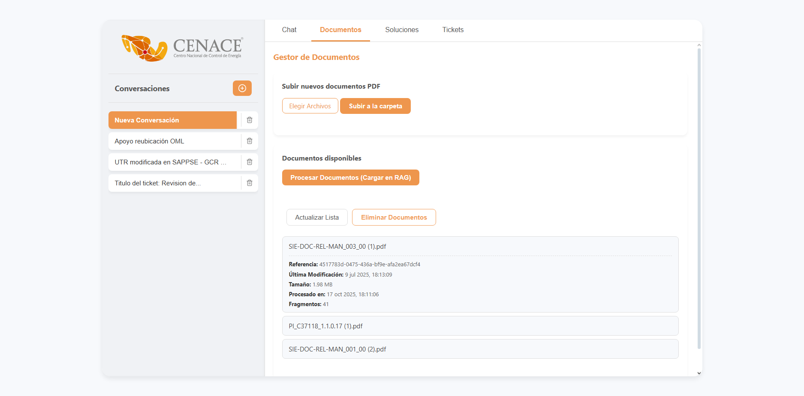
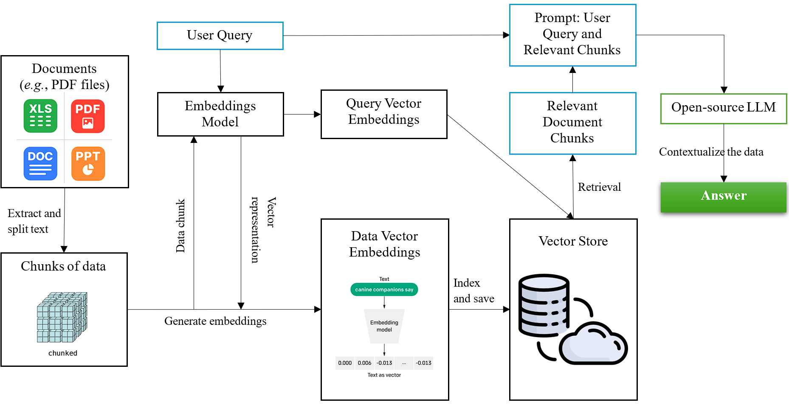

Documentación
1. Manual de instalación y despliegue
1.1. Configuraciones importantes
- El proyecto está diseñado para ser desplegado en entornos Linux o Windows con Python
3.12.9. Requiere acceso a Ollama (para la ejecución de modelos open-source), así como conectividad a una instancia de MongoDB para el registro del historial de conversaciones y tickets. - La aplicación backend se expone a través de FastAPI en el puerto 8000. Es crucial asegurar que este puerto esté abierto y accesible en el entorno de despliegue.
- Todas las credenciales y configuraciones sensibles se gestionan mediante un archivo de variables de entorno (
.env), garantizando la seguridad y facilidad de configuración.
1.2. Requisitos del sistema
- CUDA: Tarjeta de video y con drivers actualizados en el ambiente.
- Python: Versión 3.12.9.
- Pip: Última versión.
- UV: Última versión (gestor de paquetes y entornos).
- Ollama: Instalado y en ejecución en el servidor para el hosting de modelos open-source.
- MongoDB: Acceso remoto configurado para las colecciones de historial de conversaciones y tickets.
- Podman: Herramienta de virtualización y contenedores sin daemon; utilizado para correr MongoDB.
1.3. Dependencias principales del sistema
- FastAPI y Uvicorn: Utilizados para construir y servir la API web que expone los endpointsmdel chatbot y la gestión de documentos. Permiten crear una interfaz robusta y asíncrona.
- Ollama (Python Client): Librería cliente para interactuar con el servicio Ollama, que hospeda y ejecuta los modelos de lenguaje open-source (
gemma:4b) y de embeddings (bge-m3:latest) localmente. - Pymongo: El controlador oficial de Python para MongoDB. Es esencial para interactuar con la base de datos donde se almacena el historial de conversaciones, la información de los tickets y el registro de archivos procesados.
- FAISS (faiss-cpu): Biblioteca desarrollada por Meta AI para la búsqueda eficiente de similitud y agrupamiento de vectores densos. Es el núcleo de la base de datos vectorial del sistema.
- UV: Gestor de paquetes y entornos virtuales, asegura la reproducibilidad del entorno.
- Otras dependencias: Todas las demás librerías requeridas se detallan en el archivo
pyproject.toml. La instalación de este archivo se detalla más adelante.
1.4. Instalación del sistema
- Clonar el repositorio:
gh repo fork https://github.com/anmerino-pnd/proyectoCenace
cd cenacellm- Configurar el entorno:
pip install uv
uv venv
source .venv\Scripts\activate
# o `.venv\Scripts\activate` para Windows
uv pip install -e .Configurar Ollama:
Verifica que el servicio de Ollama esté instalado y activo, y que el modelo
gemma3:12bybge-m3:latestestén disponible.
curl -fsSL https://ollama.com/install.sh | sh # Para instalar Ollama
ollama serve
ollama list # Para verificar que el modelo gemma3:12b esté descargado y listo
ollama pull gemma3:12b # Correr esta línea en caso que el modelo no aparezca
ollama pull bge-m3:latestConfigurar variables de entorno:
Antes de levantar el backend, asegurarse de que el archivo
.enven la raíz del proyecto contenga las siguientes variables con sus valores correctos.
# Servidor donde está corriendo Ollama
OLLAMA_BASE_URL="http://localhost:11434"
# Conexión a MongoDB
MONGO_URI = "mongodb://localhost:27017"
DB_NAME = "CENACE_LLM"- Preparar el backend:
Con la ayuda de este comando arranca el contenedor de Mongo el cual es utilizado para guardar la información de las sesiones, conversaciones, documentos, etc.
podman run -d --name mongo \
-p 27017:27017 \
docker.io/library/mongo:7.0Este comando inicia la API, especificando el número del puerto
nohup uvicorn cenacellm.API.main:app --reload &El uso de nogup y & asegura que el proceso continúe ejecutándose en segundo plano incluso si la sesión SSH se cierra.
- Verificar logs:
Al correr la API con nohup, este genera un archivo nohup.out, con el cual podemos ver los logs del sistema, para eso solo hay que ubicarse en donde está dicho archivo y correr lo siguiente:
tail -f nohup.out2. Documentación técnica del código
La solución se basa en una arquitectura de Recuperación Aumentada con Generación (RAG). La estructura modular del código, organizada en paquetes de Python, permite una clara separación de responsabilidades.
2.1. Estructura de carpetas y módulos
El proyecto sigue una estructura modular para facilitar la gestión y el mantenimiento. A continuación, se detalla el propósito de los módulos y clases principales, además de sus funciones clave.
2.1.1. Documentos
cenacellm/doccollection.py
Clases y funciones clave
class DisjointCollection(DocCollection):__init__:- Propósito: Inicializar la configuración predeterminada para la segmentación de textos.
- Comportamiento: Establece el tamaño del fragmento (chunk_size) en 1500 caracteres y el solapamiento máximo (
max_overlap) en 200 caracteres para asegurar continuidad entre segmentos.
get_chunks() -> list:- Propósito: Dividir uno o varios objetos de texto en fragmentos más pequeños basados en la configuración semántica definida.
- Parámetros:
texts (Union[Text, List[Text]]): Un objeto Text individual o una lista de objetosTextque contienen el contenido a fragmentar.
- Retorna: Una lista de objetos
Textdonde cada elemento es un fragmento del contenido original, conservando los metadatos. - Comportamiento: Utiliza
TextSplitterpara segmentar el contenido. Si la entrada es un solo texto, lo convierte en lista. Itera sobre los textos, genera los chunks y crea nuevos objetosTextheredando los metadatos del padre.
load_pdf() -> List[Text]:- Propósito: Leer un archivo PDF, extraer su contenido textual página por página y generar metadatos detallados.
- Parámetros:
pdf_path (str): La ruta del archivo PDF a procesar.collection (str): El nombre opcional de la colección a la que pertenecerá el documento.
- Retorna: Una lista de objetos
Text, donde cada objeto representa el contenido de una página del PDF. - Comportamiento: Utiliza PdfReader para leer el archivo. Genera un ID de referencia único (
uuid4). Extrae metadatos nativos del PDF y crea un diccionario de metadatos enriquecido para cada página (incluyendo número de página, total de páginas, nombre de archivo y referencia). Finalmente, instancia objetosTextcon el contenido extraído y estos metadatos.
2.1.2. Embedder
cenacellm/ollama/embedder.py
Clases y funciones clave
class OllamaEmbedder(Embedder):__init__:- Propósito: Configurar el modelo de embeddings que se utilizará para la vectorización.
- Comportamiento: Define el modelo bge-m3:latest como el motor predeterminado para generar los vectores.
vectorize() -> NDarray:- Propósito: Convertir una cadena de texto en su representación vectorial numérica.
- Parámetros:
s (str): La cadena de texto (prompt) que se desea vectorizar.
- Retorna: Un arreglo de NumPy (
np.array) con tipo de datofloat32que representa el embedding del texto. - Comportamiento: Realiza una llamada a la API de Ollama utilizando el modelo configurado y retorna el vector resultante extraído de la respuesta.
vectorize_batch() -> list[np.ndarray]:- Propósito: Generar embeddings para una lista de textos múltiples en secuencia.
- Parámetros:
texts (list[str]): Lista de cadenas de texto a vectorizar.
- Retorna: Una lista de arreglos de NumPy, correspondientes a los vectores de cada texto de entrada.
- Comportamiento: Itera sobre la lista de textos proporcionada y llama al método
vectorizepara cada elemento individualmente, acumulando los resultados.
dim() -> int:- Propósito: Obtener la dimensión del espacio vectorial generado por el modelo
- Retorna: Un entero que representa la longitud del vector (número de dimensiones).
- Comportamiento: Vectoriza una palabra de prueba (“Hola”) y calcula la longitud del arreglo resultante para determinar la dimensionalidad del modelo.
2.1.3. Vector Store
cenacellm/vectorstore.py
Clases y funciones clave
class FAISSVectorStore(VectorStore):__init__:- Propósito: Inicializar el índice de búsqueda vectorial (FAISS) y cargar datos persistentes si existen.
- Comportamiento: Verifica si existe un índice previo en disco. Si existe, lo carga (intentando usar GPU si es posible) junto con el diccionario de textos (
pickle). Si no, crea un índiceIndexFlatL2nuevo.
get_similar() -> list:- Propósito: Realizar una búsqueda de similitud semántica en el índice vectorial.
- Parámetros:
v (np.ndarray): El vector de consulta (query embedding).k (int): Número de vecinos más cercanos a recuperar (por defecto 10).filter_metadata (Dict[str, str]): Filtros opcionales para restringir la búsqueda (ej. por colección).
- Retorna: Una lista de tuplas
(vector, texto)con los resultados más relevantes. - Comportamiento: Ejecuta
index.searchy filtra los resultados basándose en los metadatos proporcionados y la validez de los índices recuperados.
add_text() -> None:- Propósito: Añadir un único vector y su texto asociado al índice.
- Parámetros:
v (np.ndarray): El vector a añadir.t (Text): El objeto de texto asociado.
- Comportamiento: Añade el vector al índice FAISS y almacena el par
(vector, texto)en el diccionario en memoria.
add_texts() -> None:- Propósito: Añadir un lote de vectores y textos al índice de manera eficiente.
- Parámetros:
vectors (list[np.ndarrar]): Lista de vectores.chunks (list[Text]): Lista de objetos de texto correspondientes.
- Comportamiento: Apila los vectores en una matriz
numpyy los añade al índice en una sola operación, actualizando luego el diccionario secuencialmente.
save_index() -> None:- Propósito: Persistir el estado actual del índice y los textos en disco.
- Comportamiento: Escribe el índice FAISS en un archivo .faiss y serializa el diccionario de textos en un archivo .pkl.
distance() -> None:- Propósito: Calcular la distancia euclidiana entre dos vectores.
- Parámetros:
v1 (np.ndarrar): Primer vector.v2 (np.ndarrar): Segundo vector.
- Retorna: Un valor flotante representando la distancia (norma L2).
delete() -> None:- Propósito: Eliminar un elemento específico del índice por su ID interno.
- Parámetros:
idx (int): Índice numérico del elemento a eliminar.
- Comportamiento: Elimina la entrada del diccionario y remueve el ID del índice FAISS.
update_metadata() -> None:- Propósito: Actualizar los metadatos de un texto ya indexado.
- Parámetros:
idx (int): Índice del elemento.new_metadata (Dict[str, str]): Diccionario con los valores a actualizar.
- Comportamiento: Crea una copia del objeto
TextyTextMetadatacon los nuevos valores y actualiza la referencia en el diccionario.
delete_by_reference() -> None:- Propósito: Eliminar todos los vectores asociados a un documento específico.
- Parámetros:
reference_id (str): UUID del documento a eliminar.
- Comportamiento: Itera sobre el diccionario para encontrar todos los índices que coincidan con la referencia y los elimina tanto del diccionario como del índice FAISS.
2.1.4. Agente
cenacellm/ollama/assistant.py
Clases y funciones clave
class OllamaAssistant(Assistant):__init__:- Propósito: Configurar la conexión a MongoDB y definir el modelo LLM (
gemma3:4b). - Comportamiento: Establece la conexión con la base de datos, selecciona las colecciones y crea índices para consultas eficientes.
- Propósito: Configurar la conexión a MongoDB y definir el modelo LLM (
load_history() -> list:- Propósito: Recuperar el historial de chat de una conversación.
- Parámetros:
user_id (str): ID del usuario.conversation_id (str): ID de la conversación.
- Retorna: Lista de mensajes (diccionarios).
- Comportamiento: Consulta MongoDB filtrando por usuario y conversación.
save_history() -> None:- Propósito: Guardar o actualizar el historial de una conversación.
- Parámetros:
user_id (str): ID del usuario.conversation_id (str): ID de la conversación.history (list): Lista actualizada de mensajes.conversation_title (Optional[str]): Título opcional para la conversación.
- Comportamiento: Realiza una operación
update_oneconupsert=Trueen MongoDB, actualizando mensajes, fecha de modificación y título si se provee.
save_backup() -> None:- Propósito: Guardar un respaldo incremental del historial.
- Parámetros:
user_id (str): ID del usuario.history_chunk (list): Fragmento de mensajes a respaldar.
- Comportamiento: Hace un
pushde los nuevos mensajes a una colección de respaldo separada.
clear_conversation_history() -> None:- Propósito: Limpiar los mensajes de una conversación sin borrar el registro de la misma.
- Parámetros:
user_id (str): ID del usuario.conversation_id (str): ID de la conversación.
- Comportamiento: Establece el campo
messagescomo una lista vacía en MongoDB.
delete_conversation() -> None:- Propósito: Eliminar completamente una conversación.
- Parámetros:
user_id (str): ID del usuario.conversation_id (str): ID de la conversación.
- Comportamiento: Elimina el documento completo de la colección de conversaciones.
make_metadata() -> CallMetadata:- Propósito: Estructurar los metadatos de una llamada al LLM.
- Parámetros:
response (GenerateResponse): Objeto de respuesta de Ollama.duration (float): Tiempo de ejecución.references: Chunks utilizados como contexto.
- Retorna: Objeto
CallMetadataestandarizado.
answer() -> Tuple[Generator[str, None, None], str, Dict[str, Any]]:- Propósito: Generar una respuesta del asistente utilizando contexto y streaming.
- Parámetros:
question (Question): Pregunta del usuario.chunks (Chunks): Contexto recuperado.user_id (str): ID del usuario.conversation_id (str): ID de la conversación.
- Retorna: Un generador de tokens, el ID del mensaje del bot y los metadatos finales.
- Comportamiento: Construye el prompt con historial y contexto, llama a api.generate en modo stream, acumula tokens, y al finalizar guarda el turno en el historial y calcula metadatos.
update_message_metadata() -> bool:- Propósito: Actualizar metadatos de un mensaje específico (ej. “like”).
- Parámetros:
user_id (str): ID del usuario.message_id (str): ID del mensaje completo.new_metadata (Dict[str, Any]): Metadatos nuevos a actualizar.
- Comportamiento: Busca el mensaje en el historial del usuario y actualiza sus campos de metadatos en MongoDB.
get_liked_solutions() -> List[Dict[str, Any]]:- Propósito: Obtener todas las respuestas marcadas como útiles (“liked”) por el usuario.
- Parámetros:
user_id (str): ID del usuario.
- Retorna: Lista de pares pregunta-respuesta útiles.
- Comportamiento: Itera sobre todas las conversaciones del usuario buscando mensajes con
metadata.disable = True.
get_user_conversations() -> List[Dict[str, Any]]:- Propósito: Listar las conversaciones activas del usuario.
- Parámetros:
user_id (str): ID del usuario.
- Retorna: Lista con ID, título y fecha de actualización.
- Comportamiento: Consulta MongoDB proyectando solo los campos necesarios y ordenando por fecha. Genera un título por defecto si no existe.
has_liked_solution_in_conversation() -> bool:- Propósito: Verificar si una conversación contiene soluciones validadas.
- Parámetros:
conversation_id (str): ID de la conversación.
- Retorna:
Truesi existe al menos un mensaje “liked”.
2.1.5. RAG
cenacellm/rag.py
Clases y funciones clave
class RAG:__init__:- Propósito: Orquestar todos los componentes del sistema (Assistant, Embedder, VectorStore, DB).
- Comportamiento: Inicializa las instancias, conecta a MongoDB, carga cachés de archivos procesados y configura índices únicos en la base de datos.
_load_processed_files() -> Dict[str, Any]:- Propósito: Cargar en memoria el registro de archivos ya procesados para evitar re-procesamiento.
- Retorna: Diccionario mapeando claves de archivo a sus metadatos.
_save_processed_files() -> None:- Propósito: Persistir el estado de los archivos procesados en MongoDB.
_delete_processed_file() -> None:- Propósito: Eliminar registros de archivos procesados de la base de datos y memoria.
- Parámetros:
file_key (List[str]): ID del documento procesado en MongoDB.
- Comportamiento: Cargar IDs de soluciones ya indexadas para evitar duplicados.
_load_processed_solutions_ids() -> set:- Propósito: Cargar IDs de soluciones ya indexadas para evitar duplicados.
_add_processed_solution_id() -> None:- Propósito: Registrar una nueva solución como procesada en MongoDB.
- Parámetros:
user_id (str): ID del usuario.message_id (str): ID del documento del mensaje en MongoDB.
load_documents() -> list:- Propósito: Procesar una carpeta de PDFs e indexarlos.
- Parámetros:
folder_path (str): Ruta de los archivos.collection_name (str): Nombre de la colección lógica.force_reload (bool): Forzar re-procesamiento si ya existen.
- Retorna: Estadísticas [docs_totales, nuevos_docs, chunks_totales]
- Comportamiento: Lee PDFs, verifica cambios (tamaño/fecha), fragmenta, vectoriza por lotes, guarda en vectorstore y actualiza el registro de archivos procesados.
query() -> Tuple[Generator[str, None, None], List, str, Dict[str, Any]]:- Propósito: Ejecutar la lógica de recuperación y llamada al asistente (núcleo del RAG).
- Parámetros:
user_id (str): ID del usuario.conversation_id (str): ID de la conversación.question (str): Consulta del usuario.k (int): Número de chunks a recuperar.filter_metadata (Optional[Dict[str, Any]]): Filtros de búsqueda.
- Retorna: Generador de tokens, chunks usados, ID del mensaje y metadatos.
- Comportamiento: Vectoriza la pregunta, busca en el vectorstore (balanceando documentos y soluciones si no hay filtro), y delega la generación al
assistant.
answer() -> Generator[Union[str, Dict[str, Any]], None, None]:- Propósito: Wrapper sobre
querypara exponer una interfaz de streaming unificada. - Parámetros:
user_id (str): ID del usuario.conversation_id (str): ID de la conversación.question (str): Consulta del usuario.k (int): Número de chunks a recuperar.filter_metadata (Optional[Dict[str, Any]]): Filtros de búsqueda.
- Retorna: Generador que emite tokens de texto y finalmente un JSON con metadatos.
- Propósito: Wrapper sobre
delete_conversation() -> None:- Propósito: Eliminar una conversación y desvincular tickets asociados
- Parámetros:
user_id (str): ID del usuario.conversation_id (str): ID de la conversación.
- Comportamiento: Llama a
assistant.delete_conversationy actualiza tickets en MongoDB poniendo susolucion_idenNone.
add_liked_solutions_to_vectorstore() -> int:- Propósito: Convertir interacciones exitosas en nuevo conocimiento vectorial.
- Parámetros:
user_id (str): ID del usuario.
- Retorna: Cantidad de soluciones añadidas.
- Retorna: Obtiene soluciones “liked”, verifica si ya existen, extrae metadatos, crea nuevos objetos
Texty los indexa en el vectorstore.
delete_from_vectorstore() -> None:- Propósito: Eliminar documentos o soluciones del índice vectorial.
- Parámetros:
reference_id (str): ID del vector almacenado en la base de datos vectorial.
- Comportamiento: Toma un índice del vector objetivo, lo busca en el archivo indexado y lo elimina.
get_tickets() -> List:- Propósito: Obtener todos los tickets con su estado de resolución.
- Comportamiento: Consulta MongoDB y calcula dinámicamente el campo
is_solved.
add_ticket() -> Dict:- Propósito: Obtener todos los tickets con su estado de resolución.
- Comportamiento: Consulta MongoDB y calcula dinámicamente el campo
is_solved.
update_ticket_metadata() -> bool:- Propósito: Modificar campos de un ticket existente.
- Parámetros:
ticket_reference (str): ID del ticket almacenado en MongoDB.new_metadata (Dict[str, Any]): Nuevos metadatos a actualizar.
- Comportamiento: Actualiza los metadatos de un ticket específico en la base de datos basado en su ‘reference’.
get_ticket_by_conversation() -> Optional[Dict]:- Propósito: Encontrar el ticket asociado a una conversación activa.
2.1.6. API
cenacellm/API/chat.py
Esta capa actúa como lógica de negocio intermedia entre FastAPI y el sistema RAG.
Clases y funciones clave
class QueryRequest: Modelo de datos para la solicitud de chat (user_id,query,conversation_id, etc.).class UpdateMetadataRequest: Modelo para actualizar metadatos (ej. likes).class CreateConversationRequest: Modelo para iniciar conversaciones (title opcional).class AddTicketRequest: Modelo para creación de tickets.async_chat_stream() -> StreamingResponse:- Propósito: Iniciar el flujo de respuesta del chat.
- Comportamiento: Llama a
rag.answery devuelve unStreamingResponsepara envío en tiempo real.
load_documents(), get_preprocessed_files(): Wrappers para exponer funciones del RAG.upload_documents() -> Dict:- Propósito: Guardar archivos físicos en el servidor.
- Comportamiento: Recibe
UploadFile, escribe en disco y retorna estado.
delete_document() -> Dict:- Propósito: Orquestar la eliminación de documentos.
- Comportamiento: Elimina del vectorstore (vía RAG) y borra el archivo físico del disco.
process_liked_solutions_to_vectorstore(): Dispara la re-indexación de soluciones útiles.delete_solution_by_reference(): Elimina soluciones aprendidas del vectorstore.
cenacellm/API/main.py
Aquí se encuentra el main de todo el sistema y las llamadas FastAPI…
Clases y funciones clave
POST/chat: Inicia la generación de respuesta en streaming.GET /history/{user_id}/{conversation_id}: Devuelve el historial de mensajes.DELETE /history/{user_id}/{conversation_id}: Borra el historial de una conversación.POST /upload_documents: Sube archivos PDF al servidor.POST /load_documents: Dispara el procesamiento e indexación de los PDFs subidos.POST /delete_document: Elimina documentos procesados.PATCH /history/{user_id}/messages/{message_id}: Actualiza metadatos (usado para dar like).POST /process_liked_solutions/{user_id}: Convierte likes en conocimiento vectorial.GET /conversations/{user_id}: Lista conversaciones del usuario.POST /new_conversation: Crea una nueva sesión de chat.POST /delete_conversation: Elimina una sesión.GET /ticketsyPOST /tickets: Gestión de tickets de soporte.GET /: Sirve la interfaz de usuario (UI) renderizando index.html.
2.2. Modelos LLM utilizados
El flujo de información en el sistema RAG sigue dos rutas principales:
- Indexación de documentos:
- Los archivos PDF son cargados y procesados por el módulo
doccollection.py. doccollectiondivide cada documento en fragmentos.- Cada fragmento es enviado al que se encuentra en
embedder.pyy el modelobge-m3genera su representación vectorial. - Los vectores resultantes se almacenan en la base de datos vectorial de FAISS, implementada en
vectorstore.py, junto con sus metadatos.
- Proceso de consulta (QA):
- Una consulta de usuario llega el endpoint de
chat.py. - La consulta es vectorizada por el
embedder. - El
vectorstorerealiza una búsqueda de similitud semántica para recuperar los fragmentos de documento más relevantes. - Estos fragmentos se envían al
assistant.py, que los utiliza como contexto. - El
assistantutiliza el LLM (gemma3:4b) para generar una respuesta coherente y contextualizada. - La respuesta es devuelta al usuario a través del
chat.pyy elmain.py.
2.3. Puntos de entrada y funciones clave
- Gestión de conversaciones: El módulo
assistant.pygestiona el historial de conversación en MongoDB, permitiendo que el chatbot mantenga un contexto limitado con el usuario. - Gestión de tickets: Las funciones
add_ticketyupdate_ticket_metadataenrag.pyy sus respectivos endpoints enchat.pydemuestran la capacidad del sistema para interactuar y actualizar una base de datos de tickets. - Bucle de retroalimentación: La funcionalidad
has_liked_solution_in_conversationpermite identificar y potencialmente re-indexar soluciones validadas por los usuarios, mejorando continuamente la base de conocimientos.
3. Guía de entrenamiento y mejora
3.1. Generación de la base de datos vectorial
La base de conocimientos del chatbot se construye a partir de un proceso que comprende la extracción, segmentación y vectorización del contenido textual proveniente de documentos en formato PDF.
Los vectores resultantes son posteriormente indexados y almacenados en una base de datos vectorial, la cual constituye el núcleo de la recuperación de información relevante durante las interacciones con el chatbot.
3.2. Flujo de la interacción
El usuario debe acceder a la pestaña Documentos, donde podrá seleccionar los archivos que desea incorporar a la base de conocimientos del sistema. Una vez elegidos, los documentos se suben a la carpeta correspondiente dentro del entorno donde se encuentra desplegado el sistema (backend). Posteriormente, estos archivos son procesados siguiendo el flujo descrito en el apartado anterior, dando como resultado la creación de la base vectorial o base de conocimientos del sistema.

3.3. Recomendaciones para futura mejora
- Lectura de documentos escaneados
Actualmente, el sistema no puede extraer información de documentos escaneados. Sería recomendable integrar un módulo de Reconocimiento Óptico de Caracteres (OCR) para ampliar la capacidad de análisis, o de igual manera, Modelo Multimodales que pudieran extraer la información y almacenarla en documentos PDF que sean posteriormente vectorizados.
- Sistema de seguridad para el inicio de sesión
El mecanismo de inicio de sesión actual es básico, pues solo requiere ingresar el nombre del usuario.
Aunque esta simplicidad se ajusta al alcance inicial del proyecto, se sugiere incorporar un sistema de autenticación más robusto, que garantice la seguridad de acceso y manejo de información.
- Sistema de corrección de ortografía
Durante el desarrollo de los modelos de clasificación, se identificó que la falta de ortografía en los tickets afectaba la calidad del análisis.
Se propuso el desarrollo de un sistema tipo journalist capaz de identificar las 5 W’s y reconstruir el contexto completo del texto, corrigiendo iterativamente los errores ortográficos al momento de cargar los datos.
4. Arquitectura del sistema
El siguiente diagrama ilustra la arquitectura general del ssitema del chatbot, mostrando los componentes principales y el flujo de datos desde la interacción del usuario hasta la generación de respuestas y el almacenamiento del historial.

4.1. Componentes clave de conversación y chat
POST /chat/stream: Endpoint principal para la interacción conversacional. Recibe una consulta y unconversation_id, y devuelve una respuesta generada por el LLM en tiempo real a través de un stream.GET /chat/history/{user_id}/{conversation_id}: Recupera el historial de mensajes de una conversación específica.POST /conversations: Crea una nueva conversación, generando unconversation_idúnico.GET /conversations/{user_id}: Lista todas las conversaciones de un usuario, incluyendo sus títulos y la fecha de la última actualización.DELETE /conversations: Elimina una conversación específica y su historial de la base de datos.PATCH /message-metadata: Permite actualizar los metadatos de un mensaje, utilizado para la funcionalidad de “gustar” una solución.
4.2. Componentes clave de documentos y soluciones
POST /documents: Permite cargar nuevos archivos (en formato PDF) a la base de datos vectorial para expandir la base de conocimientos.GET /documents: Lista todos los documentos que han sido procesados y están disponibles para la consulta.DELETE /documents: Elimina un documento específico de la base de datos vectorial, eliminando también su referencia y los fragmentos asociados.POST /solutions: Procesa y re-indexa soluciones “gustadas” por los usuarios, agregándolas como nuevos documentos a la base de datos vectorial para mejorar la precisión del sistema.DELETE /solutions: Elimina una solución específica de la base de datos vectorial.
4.3. Componentes clave de tickets
GET /tickets: Recupera una lista de todos los tickets almacenados en la base de datos de MongoDB.POST /tickets: Permite añadir un nuevo ticket a la base de datos, con campos como título, descripción y categoría.PATCH /tickets/{ticket_reference}: Actualiza los metadatos de un ticket existente, como su estado de solución (is_solved).